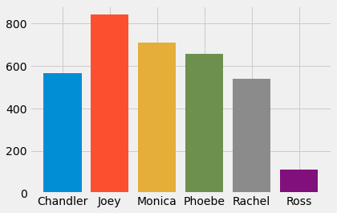

Exploratory Data Analysis¶
import sys
sys.path.append("..")
from src.dataset import ImageDataset, CLASSES
import numpy as np
import pandas as pd
import seaborn as sns
import matplotlib.pyplot as plt
import matplotlib.image as mpimg
labels_df = pd.read_csv("../data/processed/labels.csv")
print(labels_df.shape)
labels_df.head()
(2999, 7)
| filename | chandler | joey | monica | phoebe | rachel | ross | |
|---|---|---|---|---|---|---|---|
| 0 | 0_8wewPn7TZfs_0.jpg | 0.0 | 0.0 | 0.0 | 0.0 | 1.0 | 0.0 |
| 1 | 0_8wewPn7TZfs_1.jpg | 0.0 | 1.0 | 0.0 | 0.0 | 0.0 | 0.0 |
| 2 | 0_8wewPn7TZfs_2.jpg | 0.0 | 1.0 | 0.0 | 0.0 | 0.0 | 0.0 |
| 3 | 0_8wewPn7TZfs_3.jpg | 0.0 | 0.0 | 0.0 | 0.0 | 1.0 | 1.0 |
| 4 | 0_8wewPn7TZfs_4.jpg | 0.0 | 0.0 | 1.0 | 0.0 | 1.0 | 1.0 |
plt.style.use("fivethirtyeight")
Representation of each class in the dataset¶
Here we look at how the classes are represented in the dataset
classes = ["chandler", "joey", "monica", "phoebe", "rachel", "ross"]
class_and_counts = []
for classname in classes:
plt.bar(classname.title(), labels_df[classname].sum())

Images with no classes¶
Some of the images in the dataset does not contain any discernible faces and such images will contain no labels - let us see how many such images are present in our dataset
rows_with_no_class = labels_df[(labels_df[classes] == 0).all(axis=1)]
plt.bar(["Total Images", "Images with No Labels"], [len(labels_df), len(rows_with_no_class)])
<BarContainer object of 2 artists>
Example¶
idx = np.random.randint(0, len(rows_with_no_class))
plt.axis('off')
plt.imshow(mpimg.imread("../data/raw_images/"+rows_with_no_class.iloc[idx].filename))
<matplotlib.image.AxesImage at 0x7ffdb1b19d60>
mpimg.imread("../data/raw_images/"+rows_with_no_class.iloc[idx].filename).shape
(144, 256, 3)
Distribution of classes in dataset¶
We see that there are no images with 5 or more characters present together
sns.histplot(labels_df[classes].apply(np.sum, axis=1))
<AxesSubplot:ylabel='Count'>
Train-Test Split¶
BATCH_SIZE = 1
train_data = ImageDataset(train=True)
test_data = ImageDataset(train=False)
Number of training images: 2065
Number of test images: 365
plt.bar(["Training Data", "Testing Data"], [len(train_data), len(test_data)])
<BarContainer object of 2 artists>